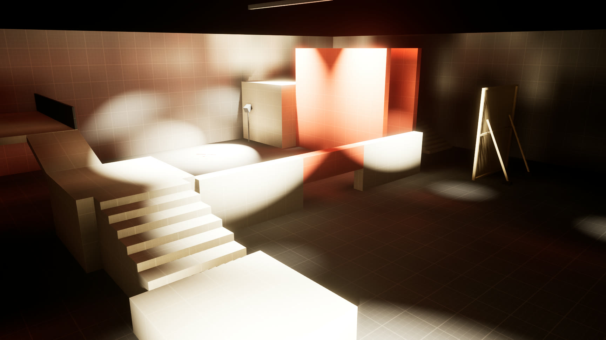
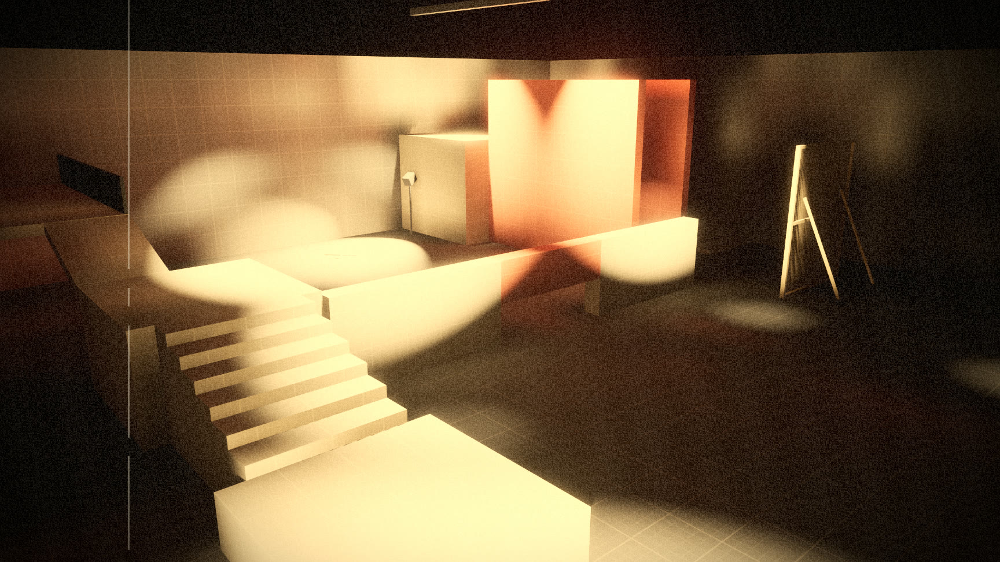
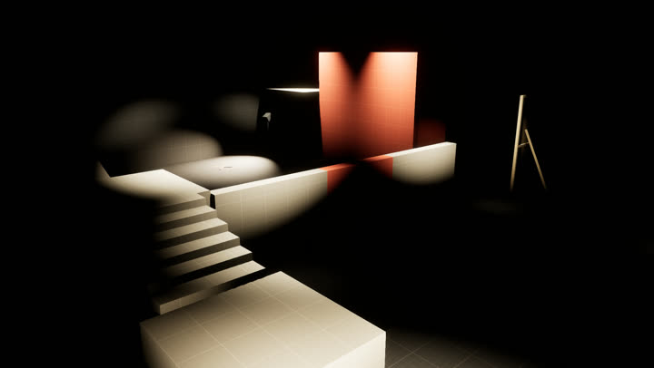
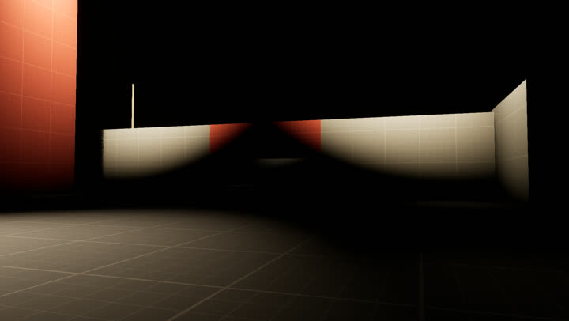

The first set, and a film look that won't hold still
Two hours in, there's a soundstage built by a script and a first-pass worn-film look on top of it. The look is meant to freeze when time stops. It doesn't yet.
Day 1, Thu 12 NovHour 2
This is the first picture of Reel Time that isn't a diagram or Epic's template. It's the screen-test soundstage, where the game will teach you that time only runs while you move, seen through the first pass of the zombie theme's film look.
The set
The World session doesn't place anything by hand. It wrote a small library of soundstage pieces (box, wall, ramp, stairs, balcony, plywood flat, light stand, camera mark) and a kit script that builds the level from them. The Engine session runs the kit in the open editor. Run it again and it wipes its own pieces and rebuilds, so the layout lives in a text file that can be reviewed and changed.
What's in the room: a low wall with a red lintel to slide under, a taped X to finish on, two tall red walls to kick between, stairs and platforms for height, and one plywood flat with its bracing showing, because every set in this game is a set.


BeforeAfterThe look, honestly
It reads as old film. It doesn't read as 1970s grindhouse yet: the cast is closer to sepia than to the saturated, blown-out colour of exploitation prints, and it turns the darker corners to brown mush. That's a tuning job.
The bigger miss is the point of the whole effect. The look is supposed to run on time speed: grain and scratches move while the reel runs, and freeze like a paused frame when you stand still. The Engine session filmed it with time set to full, then zero, then full again, and wrote this in its capture note:
"FINDING: the frame never holds still."
It also only updates about three times a second in the clip, and we don't know yet whether that's the effect or the preview window being throttled. Both are with the World session now.
Camera marks
Every level carries four camera marks: wide, side, low and overhead. The replay system will cut between them when it shows you your take, so they have to see something.

Wide mark. Rendered offscreen without auto exposure, so it's much darker than the game view.
Low mark, at floor level, looking at the slide wall and its red lintel. Side mark, blocked. The camera sits right behind the plywood flat.
Side mark, blocked. The camera sits right behind the plywood flat.

One of the four is staring at the back of a plywood flat. Better to find that in hour 2 than in a replay on Sunday.
Filming in blocks from here
The Engine session is the only one that can merge code, run kits and film. So there's a new rule from me this morning: filming happens in blocks every two hours, starting at 07:30. Sessions queue their requests, and the Engine films them all in one go on the latest build.